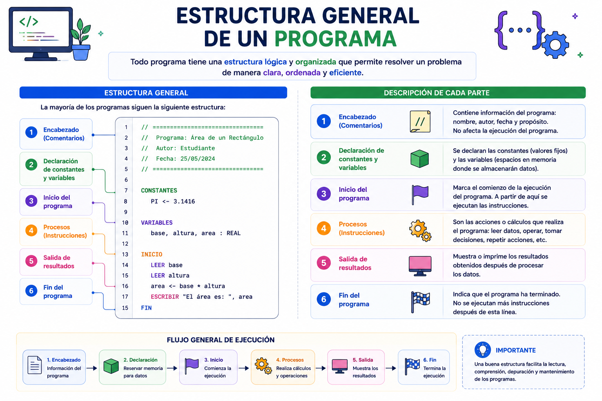

Al construir un rascacielos, los ingenieros civiles no colocan las ventanas antes de cimentar el terreno ni levantan muros sin vigas de soporte. Un programa de computadora requiere exactamente el mismo orden jerárquico. Existe una estructura universal en bloque que le dice al sistema operativo: "aquí me presento, aquí reservo memoria y aquí ejecuto acciones". Ignorar esta arquitectura destruye la legibilidad y causa colapsos sistémicos.
⚠️ Debes visualizar el video completo sin adelantar para desbloquear la evaluación.
Material audiovisual adaptado con fines estrictamente educativos. Créditos del autor: Universitat Jaume I.

La arquitectura básica de un script de software define las secciones indispensables que el compilador o intérprete lee para organizar los recursos físicos y las secuencias de comandos lógicos.